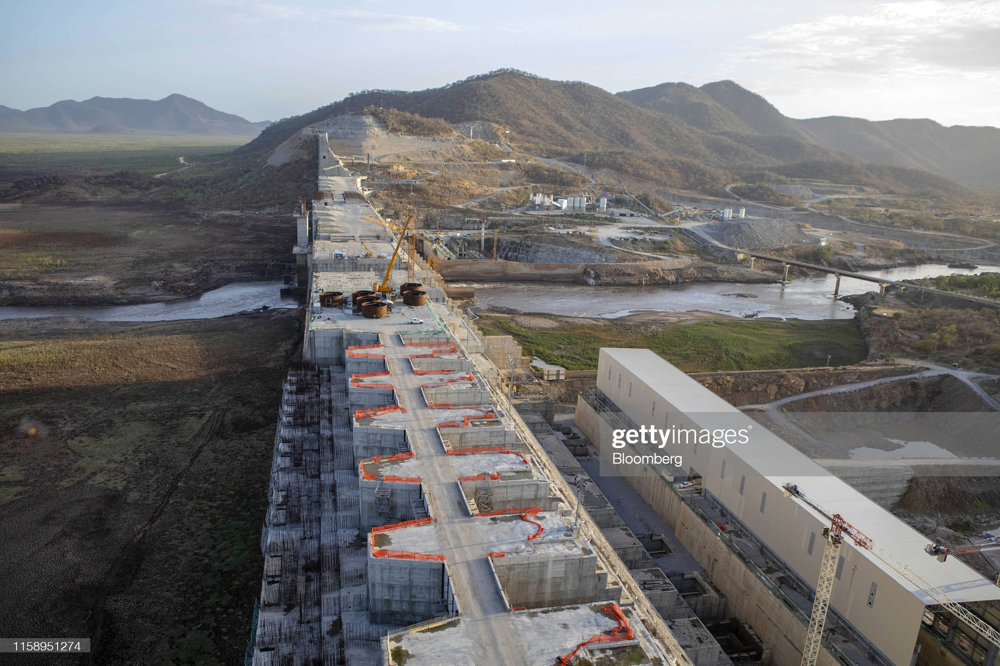

The Grand Ethiopian Renaissance Dam or: ታላቁ የኢትዮጵያ ሕዳሴ ግድብ, formerly known as the Millennium Dam (Amharic: ሕዳሴ ግድብ, is a gravity dam on the Blue Nile River in Ethiopia under construction since 2011. The dam is in the Benishangul-Gumuz Region of Ethiopia, about 45 km (28 mi) east of the border with Sudan. The primary purpose of the dam is electricity production to relieve Ethiopia’s acute energy shortage and for electricity export to neighboring countries. With a planned installed capacity of 6.45 gigawatts, the dam will be the largest hydroelectric power plant in Africa when completed, as well as the seventh largest in the world. . . See more

Grand Ethiopian Renaissance Dam Location
The Grand Ethiopian Renaissance Dam (GERD), formerly known as the Millennium Dam, is under construction in the Benishangul-Gumuz region of Ethiopia, on the Blue Nile River, which is located approximately 40 km downstream of the confluence with the River Beles at a narrow point about 15 km upstream of the Ethiopian border with Sudan.